固定小数点の逆正接計算
角度を推定する効率的な固定小数点の逆正接アルゴリズムを開発することは、ロボット工学の制御や無線通信における周波数追跡などの多数のアプリケーションで重要です。このデモでは、CORDIC アルゴリズムと多項式近似を使用して、4 象限逆正接の固定小数点計算を実行する方法を示します。この実装は、MATLAB® 組み込み関数 atan2 と同等で、浮動小数点データ型のみをサポートします。
ATAN2(Y,X) は、X および Y の要素の実数部の 4 象限逆正接で、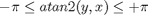 のようになります。
目次
- CORDIC アルゴリズムを使用した atan2(y,x) の計算
- ベクトル モードの CORDIC の反復の可視化
- 浮動小数点 CORDIC アルゴリズムの固定小数点への変換
- CORDIC アルゴリズムの全体的な誤差解析の実行
- emlmex を使用した固定小数点 CORDIC アルゴリズムの高速化
- チェビシェフ多項式近似を使用した atan2(y,x) の計算
- CORDIC アルゴリズムと多項式近似アルゴリズムのアルゴリズム誤差の比較
- 浮動小数点チェビシェフ多項式近似アルゴリズムの固定小数点への変換
- 多項式近似アルゴリズムの全体的な誤差解析の実行
- 固定小数点 CORDIC アルゴリズムと多項式近似アルゴリズムのコストの比較
- 参考文献
CORDIC アルゴリズムを使用した atan2(y,x) の計算
CORDIC は、COordinate Rotation DIgital Computer の略語です。ギブンズ回転に基づく CORDIC アルゴリズム ([1,2] を参照) は、反復的なシフト加算演算しか必要としないため、ハードウェア効率が最も高いアルゴリズムのうちの 1 つです。CORDIC アルゴリズムは、正弦関数、余弦関数、逆正弦関数、逆余弦関数、逆正接関数、ベクトル振幅関数、除算関数、平方根関数、双曲線関数、対数関数などさまざまな関数の計算に適しています。
ベクトル モードの CORDIC 方程式は atan(y/x) の計算に広く使用されています。ベクトル モードでは、CORDIC 回転子が入力ベクトルを正の Ｘ 軸に対して回転させて、残差ベクトルの y 成分を最小化します。残差ベクトルの y 座標が正である場合、CORDIC 回転子は反復ごとに負の角度 (時計回り) で回転し、それ以外の場合は正の角度 (反時計回り) で回転します。反復の終了までに、角度の積和が 0 に初期化された場合、累計された回転角は元の入力ベクトルの角度です。
ベクトル モードでは、CORDIC 方程式は次のようになります。
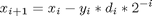
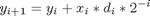
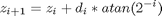 は角度の積和です。
ここで、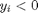 の場合は 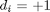、それ以外の場合は 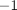 です。
i = 0、1、...、N-1 および N は、反復の合計回数です。
N が  に近づくにつれて、次のようになります。
に近づくにつれて、次のようになります。
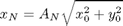
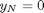
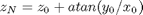
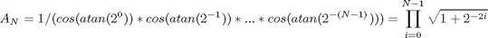
上記で説明されているように、逆正接は、角度の積和が 0 に初期化されているベクトル モードの CORDIC 回転子、つまり  と 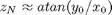 を使用して直接計算できます。
と 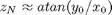 を使用して直接計算できます。
浮動小数点 CORDIC コード
浮動小数点 CORDIC 逆正接アルゴリズムは、cordic_atan_fltpt.m ファイルに実装されます。この関数は、ベクトル モードの CORDIC アルゴリズムを使用して、範囲 [-pi/2, pi/2] の逆正接を計算します。x と y はいずれも実数スカラー入力でなければならず、x は 0 以上でなければなりません。角度ルックアップ テーブル入力は angleLUT = atan(2.^-(0:N-1)) です。2 の負のべき乗による乗算は、算術の右ビット シフト演算を実行する関数 bitsra を使用して行うことができます。
function [z, x, y] = cordic_atan_fltpt(y,x,N,angleLUT)
z = 0;
for i = 0:N-1,
x0 = x;
if y < 0 % negative y leads to counter clock-wise rotation
x = x0 - bitsra(y,i); % x_{i+1} = x_{i} - y_{i}*2^{-i}
y = y + bitsra(x0,i); % y_{i+1} = y_{i} + x_{i}*2^{-i}
z = z - angleLUT(i+1); % z_{i+1} = z_{i} + atan(2^{-i})
else % positive y leads to clock-wise rotation
x = x0 + bitsra(y,i);
y = y - bitsra(x0,i);
z = z + angleLUT(i+1); % z_{i+1} = z_{i} - atan(2^{-i})
end
endベクトル モードの CORDIC の反復の可視化
CORDIC アルゴリズムは収束することは保証されますが、単調に有限回の反復であるとは限りません。 通常、反復回数を増やすと精度を上げることができます。 ただし、次の例からわかるように、中間的な反復はベクトルを次の反復よりも正の X 軸に近づけるよう回転する場合もあります。 そのような場合でも、CORDIC アルゴリズムは常に指定された回数の反復が実行されます。 反復を早期に終了させるとパイプライン化されたコードが分断されて、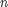 が変化するため、ゲイン 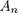 が一定でなくなります。
次の例では、反復 5 は反復 6 より優れた角度の推定を提供し、CORDIC アルゴリズムは後半の反復で収束します。
角度が 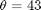 度で、振幅が 1 である入力ベクトルを初期化します。
origFormat = get(0, 'format'); %store original format setting; % restore this at the end of the demo. format short % theta = 43*pi/180; % Input angle in radians Niter = 10; % Ten iterations inX = cos(theta); % x coordinate of the input vector inY = sin(theta); % y coordinate of the input vector % pre-allocate memories zf = zeros(1, Niter); xf = [inX, zeros(1, Niter)]; yf = [inY, zeros(1, Niter)]; angleLUT = atan(2.^-(0:Niter-1)); %pre-calculate the angle look-up table % Call floating-point CORDIC algorithm for k = 1:Niter [zf(k), xf(k+1), yf(k+1)] = cordic_atan_fltpt(inY, inX, k, angleLUT); end
次の出力は、反復を 10 回行った CORDIC 角度の累積 (単位は度) を示します。 5 回目の反復で生じた誤差は 6 回目の反復より少なく、計算された角度がその後の実際の入力角度に高速で収束したことに注意してください。
angleAccumulator = zf*180/pi; angleError = angleAccumulator - theta*180/pi; fprintf('Iteration: %2d, Calculated angle: %7.3f, Error in degrees: %10g, Error in bits: %g\n',... [(1:Niter); angleAccumulator(:)'; angleError(:)';log2(abs(zf(:)'-theta))]);
Iteration: 1, Calculated angle: 45.000, Error in degrees: 2, Error in bits: -4.84036 Iteration: 2, Calculated angle: 18.435, Error in degrees: -24.5651, Error in bits: -1.22182 Iteration: 3, Calculated angle: 32.471, Error in degrees: -10.5288, Error in bits: -2.44409 Iteration: 4, Calculated angle: 39.596, Error in degrees: -3.40379, Error in bits: -4.07321 Iteration: 5, Calculated angle: 43.173, Error in degrees: 0.172543, Error in bits: -8.37533 Iteration: 6, Calculated angle: 41.383, Error in degrees: -1.61737, Error in bits: -5.14671 Iteration: 7, Calculated angle: 42.278, Error in degrees: -0.722194, Error in bits: -6.3099 Iteration: 8, Calculated angle: 42.725, Error in degrees: -0.27458, Error in bits: -7.70506 Iteration: 9, Calculated angle: 42.949, Error in degrees: -0.0507692, Error in bits: -10.1403 Iteration: 10, Calculated angle: 43.061, Error in degrees: 0.0611365, Error in bits: -9.87218
N が に近づくにつれて、CORDIC 回転子のゲイン 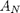 は 1.6476 に近づきます。 この例では、入力 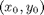 は単位円にあったため、回転子の初期振幅は 1 です。次の出力は、10 回の反復における回転子振幅を示します。
rotatorMagnitude = sqrt(xf.^2+yf.^2); % CORDIC rotator gain through iterations fprintf('Iteration: %2d, Rotator magnitude: %g\n',... [(0:Niter); rotatorMagnitude(:)']);
Iteration: 0, Rotator magnitude: 1 Iteration: 1, Rotator magnitude: 1.41421 Iteration: 2, Rotator magnitude: 1.58114 Iteration: 3, Rotator magnitude: 1.6298 Iteration: 4, Rotator magnitude: 1.64248 Iteration: 5, Rotator magnitude: 1.64569 Iteration: 6, Rotator magnitude: 1.64649 Iteration: 7, Rotator magnitude: 1.64669 Iteration: 8, Rotator magnitude: 1.64674 Iteration: 9, Rotator magnitude: 1.64676 Iteration: 10, Rotator magnitude: 1.64676
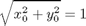 であるため、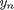 は 0 に近づき、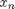 は 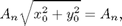 に近づくことに注意してください。
y_n = yf(end)
y_n = -0.0018
x_n = xf(end)
x_n =
1.6468
figno = 1;
fixpt_atan2_demo_plot(figno, xf, yf) %Vectoring Mode CORDIC Iterations
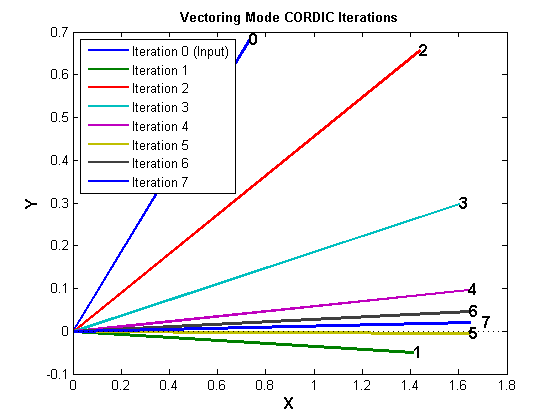 figno = figno + 1; %Cumulative Angle and Rotator Magnitude Through Iterations
fixpt_atan2_demo_plot(figno,Niter, theta, angleAccumulator, rotatorMagnitude)
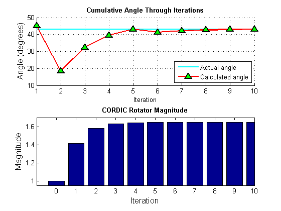 浮動小数点 CORDIC アルゴリズムの固定小数点への変換
固定小数点計算と比較すると、浮動小数点計算ではオーバーフローの問題がなく、丸め演算による桁落ちが非常に少なくなります。
浮動小数点アルゴリズムを固定小数点に変換するには、ハードウェア制約と、ダイナミック レンジと有限精度とのトレードオフを考慮する必要があります。 入力および出力の語長が 16 ビットに制限されており、入力のダイナミック レンジが [-1, +1] であると仮定します。 CORDIC 回転子のゲインによって、x レジスタと y レジスタのダイナミック レンジは (-2,+2) 内です。 オーバーフローを避けるには、語長が 16 ビットで、小数部の長さが 14 ビットである符号付き固定小数点入力データ型を選択します。 これにより、x レジスタと y レジスタを各 CORDIC 反復で再利用できます。
4 象限 CORDIC atan2 アルゴリズムは 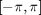 内の推定された角度を出力するため、小数部の長さが 13 ビットの出力を選択して、オーバーフローを回避し、[-4, +3.9998779296875] のダイナミック レンジを指定します。
固定小数点アルゴリズムは、fimath オブジェクトの既定の設定の最大精度モードを使用します。 分子が 2 のべき乗の数値である場合、除算演算はすべてビットシフト演算で置き換えられます。
originalGlobalFimath = fimath; % Save the current global fimath object % so that it can be restored at the end of the demo. % Specify and set the global fimath to be used in this demo. % To produce efficient code, Floor rounding and wrap overflow are used. F = fimath('RoundMode', 'floor', ... 'OverflowMode', 'wrap', ... 'ProductMode', 'FullPrecision', ... 'SumMode', 'FullPrecision'); globalfimath(F);
CORDIC 回転子のゲイン
CORDIC 回転子のゲイン は計算された最終的な角度には影響を与えませんが、中間量には影響を与えます。したがって、オーバーフローを避けるには、固定小数点アルゴリズムの開発時に入力および出力データ型の小数部の長さを選択する際は CORDIC 回転子のゲインを考慮しなければなりません。ゲイン は与えられた N の定数であり、1.64676 の値に高速で近づきます。したがって、ゲインは常に 1 より大きく 2 より小さいため、固定小数点アルゴリズムでの成長を考慮して 1 ビットだけ余分に追加する必要があります。次のコードは、N=0 ～ N=16 における CORDIC 回転子のゲイン を示します。ここで、N=0 は回転なしに相当します。
for N=0:16 A = prod(sqrt(1+2.^(-2*(0:N-1)))); fprintf('A_%2d = %.14f\n',N,A) end
A_ 0 = 1.00000000000000 A_ 1 = 1.41421356237310 A_ 2 = 1.58113883008419 A_ 3 = 1.62980060130066 A_ 4 = 1.64248406575224 A_ 5 = 1.64568891575726 A_ 6 = 1.64649227871248 A_ 7 = 1.64669325427364 A_ 8 = 1.64674350659690 A_ 9 = 1.64675607020488 A_10 = 1.64675921113982 A_11 = 1.64675999637562 A_12 = 1.64676019268469 A_13 = 1.64676024176197 A_14 = 1.64676025403129 A_15 = 1.64676025709862 A_16 = 1.64676025786545
固定小数点アルゴリズム
関数 bitsra は、倍精度、単精度、整数、および固定小数点の数値型をサポートしているため、共有の CORDIC 逆正接アルゴリズムは cordic_atan_kernel.m ファイルに実装されます。浮動小数点の数値型と固定小数点の数値型の両方をサポートします。共有の固定小数点および浮動小数点アルゴリズムは、浮動小数点の CORDIC コードのマイナー アップデートで得られます。
固定小数点演算の場合、関数 bitsra は OverflowMode プロパティと RoundMode プロパティを無視します。このアルゴリズムを使用して実行されるその他すべての固定小数点の算術演算は、グローバル fimath のプロパティに従って行われ、さらに丸められるビットはないため、この RoundMode は効率化のためにフロアに設定されます。
% function [z,x,y] = cordic_atan_kernel(y,x,N,angleLUT) % z = angleLUT(1); z(:) = 0; % z has the same data type as angleLUT % for i = 0:N-1, % x0 = x; % if y < 0 % negative y leads to counter clock-wise rotation % x(:) = x0 - bitsra(y,i); % y(:) = y + bitsra(x0,i); % z(:) = z - angleLUT(i+1); % z_{i+1} = z_{i} + atan(2^{-i}) % else % positive y leads to clock-wise rotation % x(:) = x0 + bitsra(y,i); % y(:) = y - bitsra(x0,i); % z(:) = z + angleLUT(i+1); % z_{i+1} = z_{i} - atan(2^{-i}) % end % end
4 象限 CORDIC
4 象限 CORDIC atan2 アルゴリズムは、cordic_atan2.m ファイルに実装されます。 abs(x) を渡すことで 2 象限逆正接アルゴリズムを使用し、角度補正を使用して第 2 象限および第 3 象限の結果を計算します。
function z = cordic_atan2(y,x,N) if isfi(y) % Fixed-point Ty = numerictype(y); Tz = numerictype(1, Ty.WordLength, Ty.WordLength - 3); % Build the constant angle look-up-table. Because a local fimath is not % specified for the fi object 'angleLUT', it is created using the default % RoundMode of nearest and OverflowMode of saturate. angleLUT = fi(atan(2.^-(0:N-1)), Tz); z = fi(zeros(size(y)),Tz); else % Floating-point angleLUT = atan(2.^-(0:N-1)); z = zeros(size(y)); end
for k = 1:length(y)
z(k) = cordic_atan_kernel(y(k),abs(x(k)),N,angleLUT);
end for k = 1:length(y)
% Correct for second and third quadrant
if x(k) < 0
if y(k) >= 0
% Second quadrant
z(k) = pi - z(k);
else
% Third quadrant
z(k) = -pi - z(k);
end
end
endCORDIC アルゴリズムの全体的な誤差解析の実行
全体的な誤差は、次の 2 つの部分から構成されます。
- アルゴリズム誤差。基本的な角度の有限数で表されている CORDIC 回転角度から生じます。
- 量子化誤差または丸め誤差。角度ルックアップ テーブルの有限の精度表現や固定小数点演算で使用される有限の精度演算から生じます。
CORDIC アルゴリズム誤差の計算
theta = (-178:2:180)*pi/180; % angle in radians inXflt = cos(theta); % generates input vector inYflt = sin(theta); Niter = 12; % total number of iterations zflt = cordic_atan2(inYflt, inXflt, Niter); % floating-point algorithm
CORDIC 計算を組み込み関数 atan2 と比較することによって、CORDIC アルゴリズム誤差の最大値を計算します。
format long
cordic_algErr_real_world_value = max(abs((atan2(inYflt, inXflt) - zflt)))
cordic_algErr_real_world_value =
4.753112306290497e-004
対数の底が 2 の誤差は、反復回数に関連しています。この例では、反復を 12 回行って 11 個の 2 進数の精度になったため、誤差の大きさは 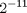 よりも小さいです。
cordic_algErr_bits = log2(cordic_algErr_real_world_value)
cordic_algErr_bits = -11.038839889583048
CORDIC の全体的な誤差の計算
CORDIC における丸めモードの影響
一般的に、Convergent、Round、および Nearest 丸めモードでは、Floor、Ceil、Fix などの他の丸めモードよりも良い結果が得られます。2 進小数点がすべて同じであり、オーバーフローしないように入力をスケーリングしたため、CORDIC アルゴリズムにおける加算および減算はすべて完全精度で行われます。C の >> 演算子と同様に、CORDIC アルゴリズムで使用される bitsra 演算はオペランドのビットを右にシフトします。余分なビットは右側にシフトされ、丸めモードに関係なく破棄されます。したがって、丸めモードは CORDIC アルゴリズムの固定小数点演算には影響を与えません。
より計算効率が悪い丸めモードが CORDIC アルゴリズムにおける精度を上げることができるのは、角度ルックアップ テーブルのビルド時だけです。関数 cordic_atan2 では、初期化時に Nearest 丸めを使用して一定の角度ルックアップ テーブルをビルドし、実行時に Floor 丸めを使用して効率性を向上させました。
反復回数と精度の関係
量子化誤差が全体的な誤差の大半を占める場合、つまり、量子化誤差がアルゴリズム誤差よりも多いときは、反復の合計回数を増加しても固定小数点の CORDIC アルゴリズムの全体的な誤差はあまり減りません。
量子化誤差がアルゴリズム誤差よりも少なくなるように、小数部の長さと反復の合計回数を選択することをお勧めします。CORDIC アルゴリズムでは、精度は反復ごとに 1 ビットずつ上がります。したがって、入力データの精度を超える多数の反復を選択する理由はありません。反復回数と精度の関係は、アルゴリズムの右シフト ステップでもわかります。次に例を示します。
x(:) = x0 - bitsra(y,i); y(:) = y + bitsra(x0,i);
上記の反時計回りの回転で、i が y および x0 の語長と等しい場合、bitsra(y,i) と bitsra(x0,i) は 0 までシフトし、次のステップに何ら関与しません。
固定小数点アルゴリズムから誤差のみを測定し、入力値の差分を測定しないように、浮動小数点参照を固定小数点 CORDIC アルゴリズムと同じ入力で計算します。
inXfix = sfi(inXflt, 16, 14); inYfix = sfi(inYflt, 16, 14); zref = atan2(double(inYfix), double(inXfix)); zfix8 = cordic_atan2(inYfix, inXfix, 8); zfix10 = cordic_atan2(inYfix, inXfix, 10); zfix12 = cordic_atan2(inYfix, inXfix, 12); zfix14 = cordic_atan2(inYfix, inXfix, 14); zfix15 = cordic_atan2(inYfix, inXfix, 15); cordic_err = bsxfun(@minus,zref,double([zfix8;zfix10;zfix12;zfix14;zfix15]));
誤差は、反復回数と入力データの精度によって異なります。この例では、入力データは [-1, +1] の範囲にあり、小数部のビットの数は 14 です。各反復における最大誤差を示している次の表と、CORDIC アルゴリズムの全体的な誤差を示している図を見ると、データの精度に達するまで、誤差が反復ごとに約 1 ビットずつ減少しているのがわかります。
iterations = [8, 10, 12, 14, 15]; max_cordicErr_real_world_value = max(abs(cordic_err')); fprintf('Iterations: %2d, Max error in real-world-value: %g\n',... [iterations; max_cordicErr_real_world_value]);
Iterations: 8, Max error in real-world-value: 0.00784503 Iterations: 10, Max error in real-world-value: 0.00198566 Iterations: 12, Max error in real-world-value: 0.000609882 Iterations: 14, Max error in real-world-value: 0.000357782 Iterations: 15, Max error in real-world-value: 0.000357782
max_cordicErr_bits = log2(max_cordicErr_real_world_value);
fprintf('Iterations: %2d, Max error in bits: %g\n',[iterations; max_cordicErr_bits]);
Iterations: 8, Max error in bits: -6.994 Iterations: 10, Max error in bits: -8.97617 Iterations: 12, Max error in bits: -10.6792 Iterations: 14, Max error in bits: -11.4486 Iterations: 15, Max error in bits: -11.4486
figno = figno + 1; fixpt_atan2_demo_plot(figno, theta, cordic_err)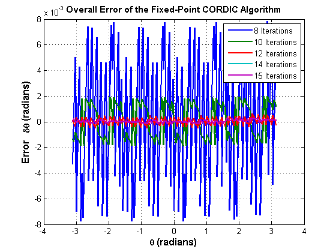
emlmex を使用した固定小数点 CORDIC アルゴリズムの高速化
C-MEX 関数は、Embedded MATLAB® emlmex コマンドを使用して MATLAB コードから生成できます。一般的に、生成した C-MEX 関数を実行すると、シミュレーション速度を改善できます ([3] を参照)。実際の速度の改善は、使用されているシミュレーション プラットフォームによって異なります。次の例は、emlmex を使用して固定小数点 CORDIC atan2 アルゴリズムを高速化する方法を示します。
関数 emlmex は、MATLAB コードを C-MEX 関数にコンパイルします。このステップには、一時ディレクトリの作成とこのディレクトリにおける書き込み権限が必要です。
emlmexdir = [tempdir 'emlmexdir']; if ~exist(emlmexdir,'dir') mkdir(emlmexdir); end emlcurdir = pwd; cd(emlmexdir)
cordic_atan2 を C-MEX ファイルにコンパイルします。emlcoder.egc(12) を使用して反復回数が定数 (たとえば、12) になるように宣言すると、角度ルックアップ テーブルも定数になるため、各反復で計算されません。また、cordic_atan2_mex を呼び出すと、反復回数に対する入力引数を指定する必要がなくなります。反復回数を渡す場合は、MEX 関数はエラーになります。
入力パラメーターのデータ型は、関数 cordic_atan2 が固定小数点計算または浮動小数点計算を実行するかどうかを決定します。Embedded MATLAB サブセットがこのファイルに対してコードを生成すると、コードは特定のデータ型に対してのみ生成されます。つまり、入力が固定小数点である場合は、固定小数点コードのみが生成されます。
inp = {inYfix, inXfix, emlcoder.egc(12)}; %Example inputs for the function
emlmex('cordic_atan2', '-o', 'cordic_atan2_mex', '-eg', inp)
最初に、cordic_atan2 を呼び出して 4 象限 atan2 のベクトルを計算します。
tstart = tic; cordic_atan2(inYfix,inXfix,Niter); telapsed_Mcordic_atan2 = toc(tstart);
次に、MEX 関数 cordic_atan2_mex を呼び出して、4 象限 atan2 のベクトルを計算します。
cordic_atan2_mex(inYfix,inXfix); % load the C-MEX file
tstart = tic;
cordic_atan2_mex(inYfix,inXfix);
telapsed_MEXcordic_atan2 = toc(tstart);
ここで、速度を比較します。MATLAB コマンド ウィンドウに次のコマンドを入力して、特定のプラットフォームにおける速度の改善を確認します。
emlmex_speedup = telapsed_Mcordic_atan2/telapsed_MEXcordic_atan2;
一時ディレクトリをクリーンアップするには、次のコマンドを実行します。
cd(emlcurdir); clear cordic_atan2_mex; status = rmdir(emlmexdir,'s');
チェビシェフ多項式近似を使用した atan2(y,x) の計算
多項式近似は、Multiply ACcumulation (MAC) 中心のアルゴリズムです。atan(x) のような非線形関数の DSP 実装に適しています。
多項式の与えられた次元と [-1, +1] の区間で評価された与えられた関数 f(x) = atan(x) に対して、多項式近似理論は 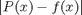 の最大値を最小化する多項式を求めようとします。ここで、P(x) は近似多項式です。一般的に、チェビシェフ多項式で与えられた関数を近似し、多項式を目的の次元でカット オフすることによって、最適な多項式に非常に近い多項式を得ることができます。
第 1 種チェビシェフ多項式を使用した区間 [-1, +1] における逆正接の近似は、次の式にまとめられます。
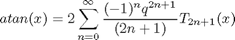
ここで、次のようになります。
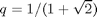
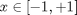
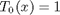
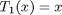

したがって、3 次のチェビシェフ多項式近似は次のとおりです。
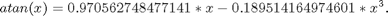
5 次のチェビシェフ多項式近似は次のとおりです。
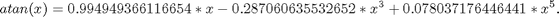
7 次のチェビシェフ多項式近似は次のとおりです。

逆正接関数のプロパティに基づいた角度補正を使用して 4 象限出力を得ることができます。
CORDIC アルゴリズムと多項式近似アルゴリズムのアルゴリズム誤差の比較
一般的に、多項式近似の次数が高いほどより正確な最終結果が得られます。ただし、多項式近似の次数が高いとアルゴリズムの複雑さも増すため、MAC 演算数が増えて、より多くのメモリが必要になります。CORDIC アルゴリズムおよび MATLAB 関数 atan2 と矛盾しないようにするために、入力引数は y/x の比ではなく x 座標と y 座標の両方で構成されます。
量子化誤差をなくすには、CORDIC およびチェビシェフ多項式近似アルゴリズムの浮動小数点の実装を比較で使用します。アルゴリズム誤差の比較から、CORDIC の反復回数を増やすと誤差が減ることがわかります。また、反復を 12 回行った CORDIC アルゴリズムでは、5 次のチェビシェフ多項式近似より角度推定値がわずかに優れていることもわかります。3 次のチェビシェフ多項式の近似誤差は、5 次のチェビシェフ多項式の 8 倍の大きさです。多項式の順序や次数は、角度推定値の必要な精度とハードウェア制約に基づいて選択できます。
atan(x) に対するチェビシェフ多項式近似の係数は、昇順の x で示されます。
constA3 = [0.970562748477141, -0.189514164974601]; % 3rd order constA5 = [0.994949366116654,-0.287060635532652,0.078037176446441]; %5th order constA7 = [0.999133448222780 -0.320533292381664 0.144982490144465... -0.038254464970299]; %7th order theta = (-90:1:90)*pi/180; % angle in radians inXflt = cos(theta); inYflt = sin(theta); zfltRef = atan2(inYflt, inXflt); %Ideal output from ATAN2 function zfltp3 = poly_atan2(inYflt,inXflt,3,constA3); % 3rd order zfltp5 = poly_atan2(inYflt,inXflt,5,constA5); % 5th order zfltp7 = poly_atan2(inYflt,inXflt,7,constA7); % 7th order poly_algErr = [zfltRef;zfltRef;zfltRef] - [zfltp3;zfltp5;zfltp7]; zflt8 = cordic_atan2(inYflt, inXflt, 8); % Cordic Alg with 8 iterations zflt12 = cordic_atan2(inYflt, inXflt, 12); % Cordic Alg with 12 iterations cordic_algErr = [zfltRef;zfltRef] - [zflt8;zflt12];
以下に、反復を 8 回と 12 回行った CORDIC アルゴリズムのアルゴリズム誤差の最大値 (またはアルゴリズム誤差の無限大ノルム) を示します。
max_cordicAlgErr = max(abs(cordic_algErr')); fprintf('Iterations:%2d, CORDIC algorithmic error in real-world-value:%g\n',... [[8,12]; max_cordicAlgErr(:)']);
Iterations:8, CORDIC algorithmic error in real-world-value: 0.00772146 Iterations:12, CORDIC algorithmic error in real-world-value: 0.000483258
対数の底が 2 の誤差は、精度の 2 進数の数を示します。CORDIC アルゴリズムの 12 回目の反復で推定された角度精度は です。
max_cordicAlgErr_bits = log2(max_cordicAlgErr); fprintf('Iterations:%2d, CORDIC algorithmic error in bits:%g\n',... [[8,12]; max_cordicAlgErr_bits(:)']);
Iterations:8, CORDIC algorithmic error in bits: -7.01691 Iterations:12, CORDIC algorithmic error in bits: -11.0149
次のコードは、3 次、5 次、および 7 次の多項式近似のアルゴリズム誤差の最大値を示します。
max_polyAlgErr = max(abs(poly_algErr')); fprintf('Order:%d, Polynomial approximation algorithmic error in real-world-value:%g\n',... [3:2:7; max_polyAlgErr(:)']);
Order:3, Polynomial approximation algorithmic error in real-world-value: 0.00541647 Order:5, Polynomial approximation algorithmic error in real-world-value: 0.000679384 Order:7, Polynomial approximation algorithmic error in real-world-value:9.16204e-005
対数の底が 2 の誤差は、精度の 2 進数の数を示します。
max_polyAlgErr_bits = log2(max_polyAlgErr); fprintf('Order:%d, Polynomial approximation algorithmic error in bits:%g\n',... [3:2:7; max_polyAlgErr_bits(:)']);
Order:3, Polynomial approximation algorithmic error in bits: -7.52843 Order:5, Polynomial approximation algorithmic error in bits: -10.5235 Order:7, Polynomial approximation algorithmic error in bits: -13.414
figno = figno + 1; fixpt_atan2_demo_plot(figno, theta, cordic_algErr, poly_algErr)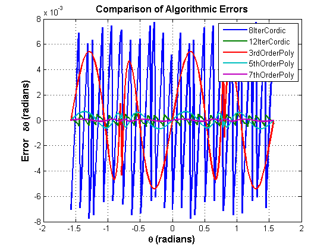
浮動小数点チェビシェフ多項式近似アルゴリズムの固定小数点への変換
入力および出力の語長がハードウェアによって 16 ビットに制限されており、5 次のチェビシェフ多項式を近似で使用すると仮定します。 入力 x、y、および y/x のダイナミック レンジはすべて [-1, +1] 内であるため、語長が 16 ビットで、小数部の長さが 14 ビットである符号付き固定小数点入力データ型を選択するとオーバーフローを回避できます。 多項式の係数は純粋に分数で (-1, +1) 内であるため、語長が 16 ビットで、小数部の長さが 15 ビット (最高の精度) である符号付き固定小数点として、それらのデータ型を選択できます。 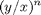 が [-1, +1] 内であり、係数の乗算および が (-1, +1) 内であるため、アルゴリズムはロバストです。 したがって、ダイナミック レンジは拡大せず、事前定義した固定小数点データ型により、オーバーフローは発生しません。
CORDIC アルゴリズムと同様に、4 象限多項式近似ベースの atan2 アルゴリズムは 内の推定角度を出力します。 したがって、13 ビットの出力の小数部の長さを選択するとオーバーフローを回避して [-4, +3.9998779296875] のダイナミック レンジを指定できます。
区間 [-1, +1] における逆正接の基本的な浮動小数点チェビシェフ多項式近似は chebyPoly_atan_fltpt.m ファイルに実装されます。
function z = chebyPoly_atan_fltpt(y,x,N,constA,Tz)
tmp = y/x;
switch N
case 3
z = constA(1)*tmp + constA(2)*tmp^3;
case 5
z = constA(1)*tmp + constA(2)*tmp^3 + constA(3)*tmp^5;
case 7
z = constA(1)*tmp + constA(2)*tmp^3 + constA(3)*tmp^5 + constA(4)*tmp^7;
otherwise
disp('Supported order of Chebyshev polynomials are 3, 5 and 7');
end区間 [-1, +1] における逆正接の基本的な固定小数点チェビシェフ多項式近似は chebyPoly_atan_fixpt.m ファイルに実装されます。
function z = chebyPoly_atan_fixpt(y,x,N,constA,Tz)
z = fi(0,'NumericType', Tz); Tx = numerictype(x); tmp = fi(0, 'NumericType',Tx); tmp(:) = Tx.divide(y, x); % y/x;
tmp2 = fi(0, 'NumericType',Tx); tmp3 = fi(0, 'NumericType',Tx); tmp2(:) = tmp*tmp; % (y/x)^2 tmp3(:) = tmp2*tmp; % (y/x)^3 z(:) = constA(1)*tmp + constA(2)*tmp3; % for order N = 3
if (N == 5) || (N == 7)
tmp5 = fi(0, 'NumericType',Tx);
tmp5(:) = tmp3 * tmp2; % (y/x)^5
z(:) = z + constA(3)*tmp5; % for order N = 5
if N == 7
tmp7 = fi(0, 'NumericType',Tx);
tmp7(:) = tmp5 * tmp2; % (y/x)^7
z(:) = z + constA(4)*tmp7; %for order N = 7
end
endチェビシェフ多項式近似を使用した普遍的な 4 象限 atan2 計算は、poly_atan2.m ファイルに実装されます。
function z = poly_atan2(y,x,N,constA,Tz)
if nargin<5,
% floating-point algorithm
fhandle = @chebyPoly_atan_fltpt;
Tz = [];
z = zeros(size(y));
else
% fixed-point algorithm
fhandle = @chebyPoly_atan_fixpt;
%pre-allocate output
z = fi(zeros(size(y)), 'NumericType', Tz);
end for idx = 1:length(y)
% fist quadrant
if abs(x(idx)) >= abs(y(idx))
% (0, pi/4]
z(idx) = feval(fhandle, abs(y(idx)), abs(x(idx)), N, constA, Tz);
else
% (pi/4, pi/2)
z(idx) = pi/2 - feval(fhandle, abs(x(idx)), abs(y(idx)), N, constA, Tz);
end if x(idx) < 0
% second and third quadrant
if y(idx) < 0
z(idx) = -pi + z(idx);
else
z(idx) = pi - z(idx);
end
else % fourth quadrant
if y(idx) < 0
z(idx) = -z(idx);
end
end
end多項式近似アルゴリズムの全体的な誤差解析の実行
CORDIC アルゴリズムと同様に、多項式近似アルゴリズムの全体的な誤差は 2 つの部分で構成されます。すなわち、アルゴリズム誤差と量子化誤差です。 多項式近似のアルゴリズム誤差は、前の節で解析し、CORDIC アルゴリズムのアルゴリズム誤差と比較しました。
量子化誤差の計算
量子化誤差は、固定小数点多項式近似を浮動小数点多項式近似と比較することで計算されます。
F = fimath('RoundMode','Floor','OverflowMode','Saturate'); globalfimath(F); % Quantize the inputs and coefficients with convergent rounding % Then, associate the fi objects with the global fimath by % removing their local fimath properties inXfix = fi(fi(inXflt, 1, 16, 14,'RoundMode','Convergent'),'fimath',[]); inYfix = fi(fi(inYflt, 1, 16, 14,'RoundMode','Convergent'),'fimath',[]); constAfix3 = fi(fi(constA3, 1, 16,'RoundMode','Convergent'),'fimath',[]); constAfix5 = fi(fi(constA5, 1, 16,'RoundMode','Convergent'),'fimath',[]); constAfix7 = fi(fi(constA7, 1, 16,'RoundMode','Convergent'),'fimath',[]); Tz = numerictype(1, 16, 13); % output data type zfix3p = poly_atan2(inYfix,inXfix,3,constAfix3,Tz); % 3rd order zfix5p = poly_atan2(inYfix,inXfix,5,constAfix5,Tz); % 5th order zfix7p = poly_atan2(inYfix,inXfix,7,constAfix7,Tz); % 7th order poly_quantErr = bsxfun(@minus, [zfltp3;zfltp5;zfltp7], double([zfix3p;zfix5p;zfix7p])); % polyOrder = 3:2:7; max_polyQuantErr_real_world_value = max(abs(poly_quantErr')); max_polyQuantErr_bits = log2(max_polyQuantErr_real_world_value); fprintf('PolyOrder: %2d, Quant error in bits: %g\n',... [polyOrder; max_polyQuantErr_bits]);
PolyOrder: 3, Quant error in bits: -12.3514 PolyOrder: 5, Quant error in bits: -11.784 PolyOrder: 7, Quant error in bits: -11.7412
全体的な誤差の計算
全体的な誤差は、固定小数点多項式近似を組み込み関数 atan2 と比較することで計算されます。 理想の参照出力は zfltRef です。 7 次の多項式近似の全体的な誤差は、大部分が量子化誤差です。これは、固定小数点の算術演算からの入力データ、係数、および丸め効果の有限精度によるものです。
poly_err = bsxfun(@minus, zfltRef, double([zfix3p;zfix5p;zfix7p])); max_polyErr_real_world_value = max(abs(poly_err')); max_polyErr_bits = log2(max_polyErr_real_world_value); fprintf('PolyOrder: %2d, Overall error in bits: %g\n',... [polyOrder; max_polyErr_bits]);
PolyOrder: 3, Overall error in bits: -7.51907 PolyOrder: 5, Overall error in bits: -10.2401 PolyOrder: 7, Overall error in bits: -11.5883
figno = figno + 1; fixpt_atan2_demo_plot(figno, theta, poly_err)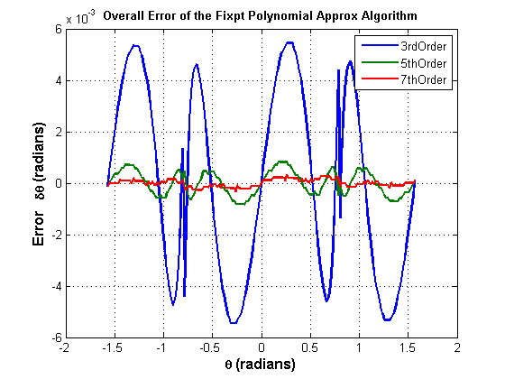
多項式近似における丸めモードの影響
角度の積和で、反復 12 回、小数部の長さ 13 ビットの CORDIC アルゴリズムと比較すると、5 次のチェビシェフ多項式近似からは同様の順序の量子化誤差が得られます。次の例では、Nearest、Round、および Convergent 丸めモードの量子化誤差は Floor 丸めモードよりも小さくなります。
Floor 丸めを使用した量子化誤差の最大値は次のようになります。
poly5_quantErrFloor = max(abs(poly_quantErr(2,:))); poly5_quantErrFloor_bits = log2(poly5_quantErrFloor)
poly5_quantErrFloor_bits = -11.783967700537794
比較する場合は、次のように Nearest 丸めを使用して量子化誤差の最大値を計算します。
F = fimath('RoundMode','Nearest','OverflowMode','Saturate'); globalfimath(F); zfixp5n = poly_atan2(inYfix,inXfix,5,constAfix5, Tz); poly5_quantErrNearest = max(abs(zfltp5 - double(zfixp5n))); poly5_quantErrNearest_bits = log2(poly5_quantErrNearest)
poly5_quantErrNearest_bits = -13.175966487895451
固定小数点 CORDIC アルゴリズムと多項式近似アルゴリズムのコストの比較
固定小数点 CORDIC アルゴリズムには、"反復ごとに" 次の演算が必要です。
- テーブルのルックアップ 1 回
- シフト 2 回
- 加算 3 回
比較として、N 次の固定小数点チェビシェフ多項式近似アルゴリズムには、次の演算が必要です。
- 除算 1 回 (比率が入力として使用できない場合にのみ必要)
- 乗算 (N+1) 回
- 加算 (N-1)/2 回
実際のアプリケーションでは、固定小数点の逆正接を計算するためのアルゴリズムの選択は、通常、必要な精度、コスト、およびハードウェア制約によって異なります。
% Reset the global fimath to the original global fimath globalfimath(originalGlobalFimath); set(0, 'format', origFormat); %reset MATLAB output format close all;
参考文献
- Jack E. Volder, The CORDIC Trigonometric Computing Technique, IRE Transactions on Electronic Computers, Volume EC-8, September 1959, pp330-334.
- Ray Andraka, A survey of CORDIC algorithm for FPGA based computers, Proceedings of the 1998 ACM/SIGDA sixth international symposium on Field programmable gate arrays, Feb. 22-24, 1998, pp191-200
- Speeding Up Fixed-Point Execution with the emlmex Function, in section "Working with the Fixed-Point Embedded MATLAB Subset" of Fixed-Point Toolbox™ User's Guide